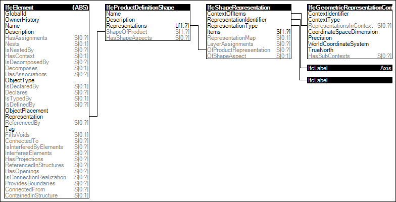

Link to this page
Link to this pageElements following a path provide an 'Axis' representation indicating a line segment or any arbitrary open bounded curve. Examples of such elements include walls, beams, columns, pipes, ducts, and cables. For elements that have a material profile set association indicating cross-section, a 'Body' representation may be generated based on the axis curve and material profiles. Curve styles may indicate particular colors, line thicknesses, and dash patterns for 2D rendering.
The representation identifier of the axis representation is:
EXAMPLE A two-dimensional bounded curve is used as the wall axis in standard walls, a three-dimensional bounded curve is used as the reference axis in standard columns.
Figure 31 illustrates an instance diagram.
 |
Figure 31 — Axis Geometry |